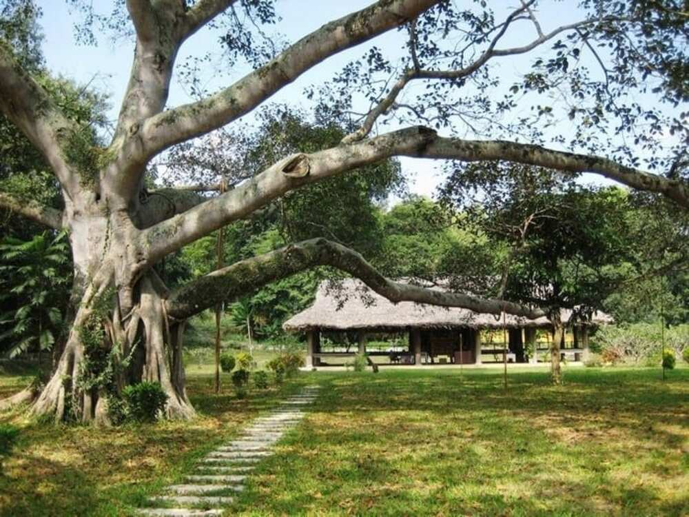
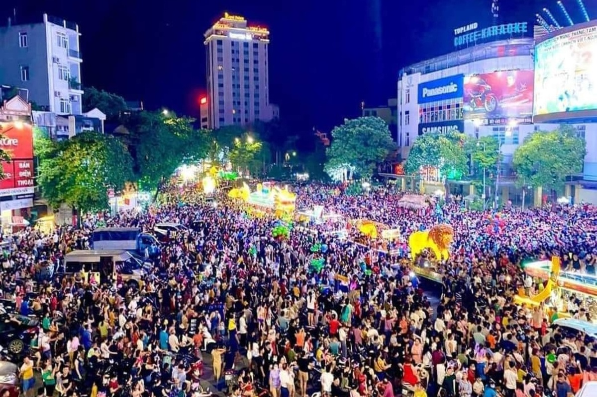
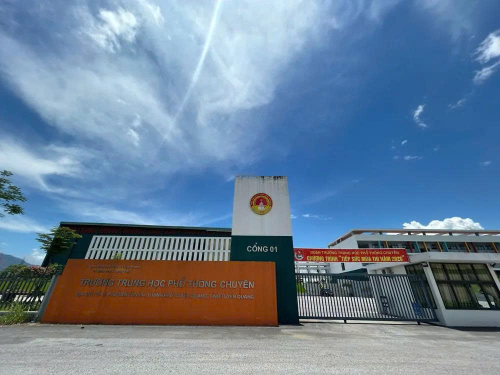

Vị trí địa lý – Quy mô – Đơn vị hành chính
Tỉnh Tuyên Quang mới nằm ở trung tâm vùng Đông Bắc Bộ, tiếp giáp với các tỉnh: Cao Bằng, Thái Nguyên, Phú Thọ, Lào Cai và có đường biên giới quốc gia dài 277,556km, tiếp giáp với tỉnh Vân Nam (Trung Quốc) thông qua cửa khẩu quốc tế Thanh Thủy. Đây là vị trí có ý nghĩa chiến lược cả về quốc phòng – an ninh và phát triển kinh tế đối ngoại.
Diện tích tự nhiên: 13.795,6 km²
Dân số: 1.865.270 người (năm 2025)
Cơ cấu hành chính: Sau khi sắp xếp đơn vị hành chính, tỉnh Tuyên Quang mới có 124 đơn vị hành chính cấp xã (gồm 117 xã và 7 phường). Trong đó, có 104 xã và 7 phường mới được hình thành sau khi sáp nhập từ các đơn vị hành chính cấp xã hiện có; 13 xã giữ nguyên không thực hiện sáp nhập.
Lịch sử – Văn hóa: Sự giao thoa và kế thừa
Tuyên Quang và Hà Giang – hai vùng đất có vị trí đặc biệt trong lịch sử dân tộc, khi hợp nhất đã kết nối hai không gian di sản. Một bên là vùng đất cách mạng tiêu biểu, nơi ghi dấu bước ngoặt quan trọng của cách mạng Việt Nam, một bên là vùng biên cương địa đầu, giàu bản sắc văn hóa và kiên trung giữ nước của Tổ quốc.
Tuyên Quang – được biết đến “Thủ đô Khu giải phóng – Thủ đô Kháng chiến”, nơi Bác Hồ và Trung ương Đảng từng lãnh đạo nhân dân kháng chiến chống thực dân Pháp. Các di tích lịch sử như: Làng Tân Trào, đình Tân Trào, Lán Nà Nưa, cây đa Tân Trào… đã trở thành “địa chỉ đỏ” trong hành trình về nguồn của cả nước.
Hà Giang – là vùng đất địa đầu cực Bắc của Tổ quốc, nơi có những địa danh thiêng liêng như Cột cờ Lũng Cú, Cao nguyên đá Đồng Văn, đèo Mã Pì Lèng, Dinh họ Vương, gắn liền với truyền thống giữ nước, bảo vệ chủ quyền biên giới quốc gia. Năm 2010, Cao nguyên đá Đồng Văn được công nhận là Công viên địa chất toàn cầu đầu tiên của Việt Nam.
Kinh tế – Xã hội: Mở rộng không gian, khai thác tiềm năng
Sự hợp nhất giữa hai địa phương đã mở ra một không gian phát triển mới, rộng lớn và giàu tiềm năng, tạo tiền đề để khai thác hiệu quả trên mọi lĩnh vực. Trong giai đoạn trước mắt, tỉnh mới tập trung tổ chức lại không gian phát triển phù hợp với mô hình đơn vị hành chính và chính quyền địa phương hai cấp, bảo đảm đồng bộ, khoa học và hiệu quả trên tất cả các lĩnh vực.
Nông – Lâm nghiệp: Lấy liên kết vùng làm động lực, tỉnh xác định rõ các vùng trọng điểm, cực tăng trưởng mới, hành lang phát triển dựa trên hệ thống kết cấu hạ tầng kinh tế – xã hội hiện đại. Phát triển nông nghiệp bền vững gắn với các sản phẩm đặc trưng đã có thương hiệu như chè Shan Tuyết, cam sành Hàm Yên, gạo Tân Trào, thịt bò Vàng vùng cao, mật ong bạc hà Đồng Văn, lợn đen, hồng không hạt… hướng tới mở rộng thị trường trong và ngoài nước.

hình lịch sử tại tân trào

hình ảnh thủy điện hòa bình

trung thu tại tuyên quang

ảnh trường THPT chuyên Tuyên Quang
Cây đa Tân Trào lịch sử
Quảng trường Nguyễn Tất Thành
Di chuột qua hoặc dùng phím Tab focus vào một hình ảnh bên dưới để hiển thị ở đây.